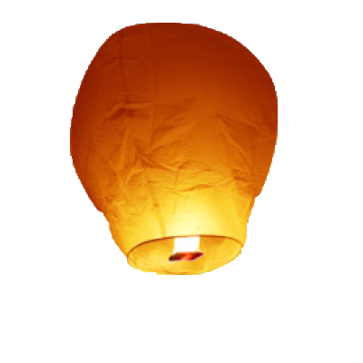
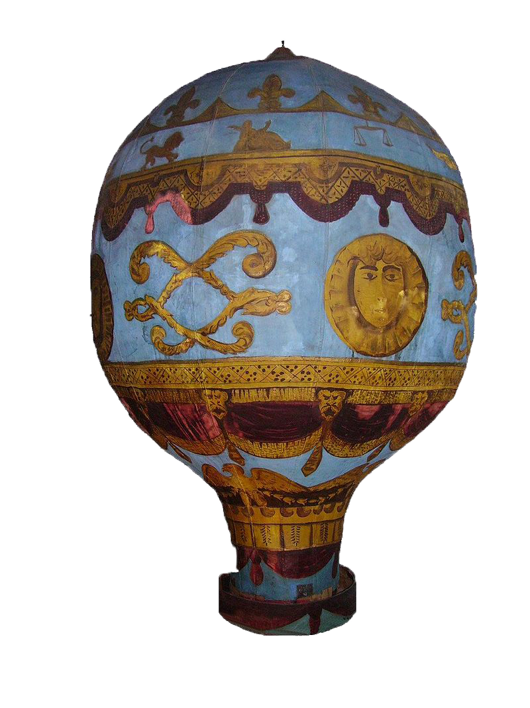
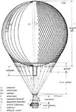
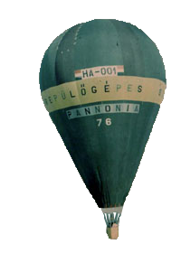

A hőlégballon története
Az első hőlégballon kezdeményt a kínaiak használták az ún. három királyság idején Kongming lámpások formájában. Ezek kis méretű, belsejükben mécsest tartalmazó lámpások voltak, amelyeket katonai jelzések leadására engedtek a magasba.
A 17. században Francesco Lana Terzi jezsuita szerzetes fedezte fel az aeronautika egyik alaptörvényét. Rájött, hogy a levegőnek súlya van, így ami nála kisebb sűrűségű, az felemelkedik a levegőbe.
Az 1700-as évek közepén a franciaországi Annonay-ban működő papírgyáros család két sarja, a később csak Montgolfier fivérekként ismert Joseph és Étienne kísérletezni kezdtek, és először vízgőzzel próbálták magasba emeltetni légballonjukat, de a kihűlő vízgőz kicsapódott és átnedvesítette a papírból készült légballont.
Később arra figyeltek fel, hogy az égő papír hamuja felszáll az ég felé. A zárt füstöt is fel akarták használni, de az hamar lehűlt, és a jármű a földre ereszkedett. Végül az alulról történő folyamatos melegítés mellett döntöttek. Először üresen engedték fel léggömbjüket a magasba, később állatokat (egy juhot, egy kakast és egy kacsát) helyeztek a kosárba. Végül eldöntötték, hogy elvégzik az első emberes repülést. XVI. Lajos király rabokat akart a próbarepülésre felhasználni, de egy fiatal orvos, Jean-François Pilâtre de Rozier (ő lett később az első ember, aki légibalesetben meghalt) és François Laurent d'Arlandes márki vállalta, hogy beszállnak a légballon gondolájába. Így, az első, embert is szállító hőlégballonos repülést ők hajtották végre 1783. október 19-én Párizs mellett. A hivatalos, több száz meghívott előtt végrehajtott repülésre 1783. november 21-én került sor. A repülés 25 percig tartott, ezalatt kb. 7,5 km-t sikerült megtenni. Maga a léghajó vászonból készült, amelyet papírral béleltek ki. A léggömb alja nyitott volt, alatta egy rácson szalma és száraz fa égett, és annak füstje, illetve a felmelegedett levegő emelte magasba a léggömböt.
A hőlégballonnak azonban máris megjelent a vetélytársa. Alig néhány nappal a Montgolfier-fivérek sikeres bemutatója után, 1783. december 1-jén Jacques Charles és Anne-Jean Robert – szintén Párizs környékén – kénsav és vasreszelék reakciójából származó hidrogénnel töltött léggömbbel emelkedett kb. 550 méter magasba. Miután Párizs mellett egy mezőn leszálltak, a megrémült parasztok azonnal megsemmisítették az égből pottyantfura szerkezetet.
A fejlődést azonban nem lehetett megállítani. A műszaki versenyt ekkor mindenesetre a hidrogénnel töltött léggömbök nyerték, és a hőlégballon csak 1860 után kezdett el újból terjedni.
A következő évben Szablik István és Domin József is kísérletezett léggömb felbocsátásával. A felfedezés gyakorlati felhasználását először a katonaság kezdte el. 1861–63-ban az amerikai polgárháború alatt létrejött az első, légballonokra épülő légierő.
Az első felszállást Magyarországon Gregor Kraškovič szlovén származású orvos és Johann G. Menner bécsi fizikus hajtották végre 1811. június 3-án, Mennerrel a gondolában. A Magyar Aero Club 1902. március 2-án alakult meg, és május 1-jén szállt fel a Turul, az első magyar tulajdonú ballon hazánkban. A második világháború után 1977-ben készítették el az első magyar hőlégballont, a Pannóniát, amelyet azóta több száz követett. 1980 óta rendszeresen szerveznek versenyeket, nemzeti bajnokságokat is. 1990-ben Molnár Csaba európai hőlégballon-bajnok lett. 2005-ben Debrecenben rendezték meg a 14. Hőlégballon Európa- bajnokságot, amelyen 84 versenyzőballon mellett 30 fiesztaballon is részt vett.
